Producir y presentar información a Jose para que pueda tomar decisiones más rápidas, con menos riesgo y con la confianza de que los números hacen sentido con el negocio. Esto es:
No reportamos un Excel: capturamos la información del negocio — qué pasó, qué está pasando y qué pronosticamos que pasará.
Los reportes deben narrar lo que ocurre en la realidad operativa del negocio y cómo eso afecta la rentabilidad de la empresa.
Las preguntas recurrentes son: ¿cómo podemos hacerlo mejor?, ¿cómo podemos hacerlo más rápido?
Buscando esas respuestas integramos Apps, APIs, IA y mejora continua de los procesos para automatizar y lograr hacer más, mejor y más rápido el trabajo operativo de captura, organización de data y emisión de reportes.
Grado institucional en finanzas significa:
Cuando Finanzas opera a grado institucional, debe poder proveer: